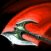
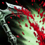
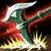
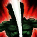
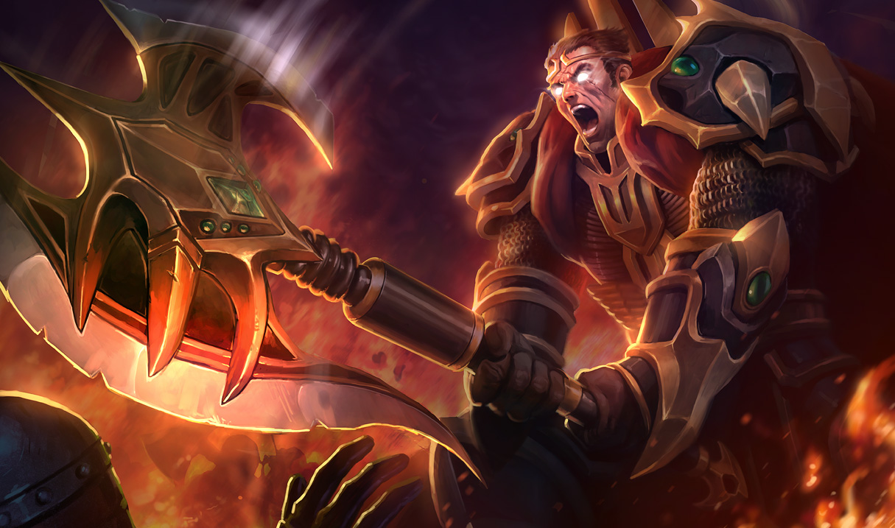
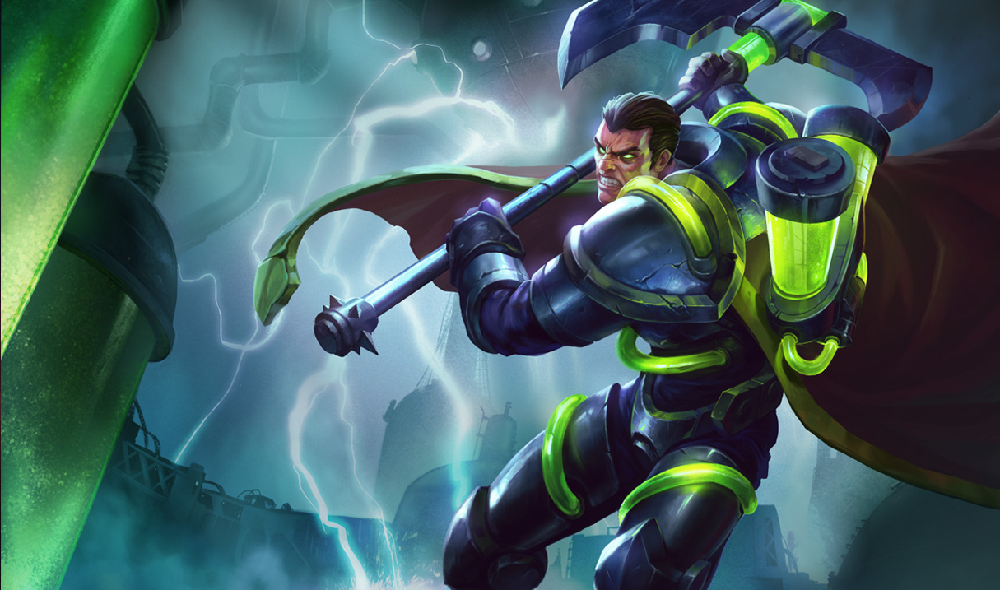
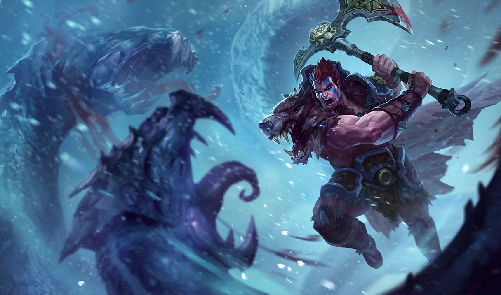
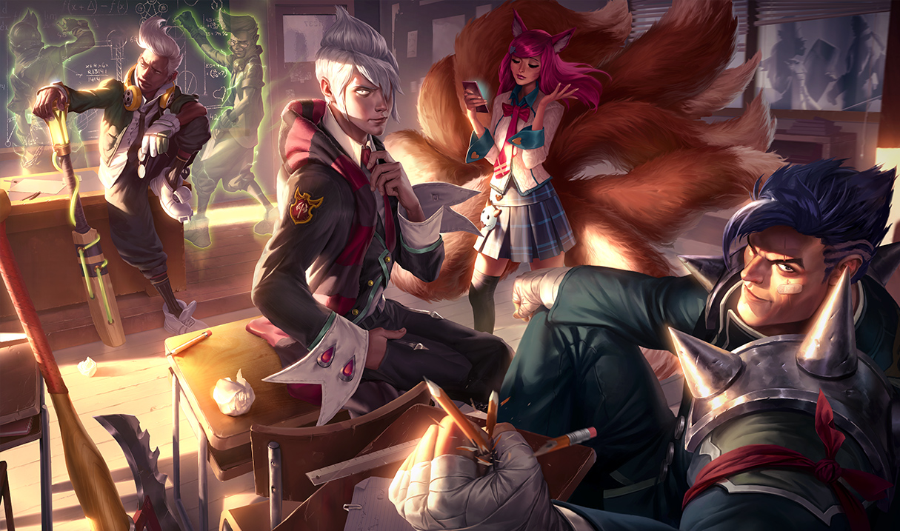
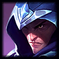

Darius aims his attacks strategically, causing his target to bleed. This effect stacks up to five times. Enemies that reach max Hemorrhage cause Darius to gain Noxian Might, greatly increasing his damage.

Darius
the Hand of Noxus
Noxus
Health:
582.24 (+100 per level)
Attack damage:
56 (+5 per level)
Attack speed:
0.625 (+1% per level)
Movement speed:
340
Health Regen:
9.845 (+0.95 per level)
Armor:
30 (+4 per level)
Magic Resist:
32.1 (+1.25 per level)
There is no greater symbol of Noxian might than Darius, the nation's most feared and battle-hardened warrior. Orphaned at a young age, Darius had to fight to keep himself and his younger brother alive. By the time he joined the military, he had already developed the strength and discipline of a veteran soldier.
Read moreAbilities




Skins






Abilities
Hemorrhage
Decimate
Cost:
30/35/40/45/50 Mana
Range:
1
Darius winds up and swings his axe in a wide circle. Enemies struck by the blade take more damage than those struck by the handle. Darius heals based on enemy champions hit by the blade.
After a short delay, Darius swings his axe around himself, striking enemies in its path. Enemies hit by the axe's blade take 40/70/100/130/160 (+105% bonus Attack Damage) physical damage. Enemies hit by the handle take 50% damage (does not apply Hemorrhage). Darius heals for 12% of his missing Health per enemy champion hit by the blade (max: 36%).
Crippling Strike
Cost:
30 Mana
Range:
300
Darius's next attack strikes an enemy's crucial artery. As they bleed out, their Movement Speed is slowed.
Darius's next basic attack deals 0 physical damage and slows the target by 90% for 1 second.Crippling Strike refunds its Mana cost and 50% of its cooldown if it kills the target.
Apprehend
Cost:
45 Mana
Range:
535
Darius hones his axe, passively causing his physical damage to ignore a percentage of his target's Armor. When activated, Darius sweeps up his enemies with his axe's hook and pulls them to him.
Passive: Darius gains 5/10/15/20/25% Armor Penetration. Active: Pulls in all enemies in front of Darius and slows them by 40% for 1 second.
Noxian Guillotine
Cost:
100/100/0 Mana
Range:
460
Darius leaps to an enemy champion and strikes a lethal blow, dealing true damage. This damage is increased for each stack of Hemorrhage on the target. If Noxian Guillotine is a killing blow, its cooldown is refreshed for a brief duration.
Leaps to target enemy champion and strikes a lethal blow, dealing 100/200/300 (+75% bonus Attack Damage) true damage. For each stack of Hemorrhage on the target, Noxian Guillotine deals an additional 20% damage. Maximum Damage: 100/200/300 If Noxian Guillotine kills the target, it may be re-cast at no cost within 20 seconds.At rank 3, Noxian Guillotine unlocks - its cooldown resets entirely on kills and it no longer has a Mana cost.
There is no greater symbol of Noxian might than Darius, the nation's most feared and battle-hardened warrior. Orphaned at a young age, Darius had to fight to keep himself and his younger brother alive. By the time he joined the military, he had already developed the strength and discipline of a veteran soldier. The first true test of Darius's resolve occurred in a crucial battle against Demacia, where the Noxian forces were exhausted and outnumbered. Darius's captain called for his troops to retreat, but Darius refused to accept such an act of cowardice. Breaking formation, Darius strode towards the captain and decapitated him with one sweep of his gigantic axe. Both terrified and inspired, the soldiers followed Darius into battle and fought with incredible strength and fervor. After a long and grueling battle, they ultimately emerged victorious.
Seizing momentum from this victory, Darius led his now fiercely loyal troops in a devastating campaign against Demacia. After proving his power on the battlefield, Darius turned his gaze homeward. He saw a Noxus riddled with weakness, where greedy, complacent nobles drained the nation's strength. Seeking to restore his country to greatness, Darius took it upon himself to reshape the Noxian leadership. He identified weak figureheads and violently removed them from their positions of power. Many in Noxus saw Darius's cull as an attempt to seize power, but he had a different plan for the throne. He had been watching the rise of Jericho Swain with keen interest. In Swain, Darius saw a leader with the mind and determination to bring Noxus to glory. Now allied with the Master Tactician, Darius works to unite the nation behind his vision of true Noxian strength.
''A united Noxus could control the world - and would deserve to.'' -- Darius
Seizing momentum from this victory, Darius led his now fiercely loyal troops in a devastating campaign against Demacia. After proving his power on the battlefield, Darius turned his gaze homeward. He saw a Noxus riddled with weakness, where greedy, complacent nobles drained the nation's strength. Seeking to restore his country to greatness, Darius took it upon himself to reshape the Noxian leadership. He identified weak figureheads and violently removed them from their positions of power. Many in Noxus saw Darius's cull as an attempt to seize power, but he had a different plan for the throne. He had been watching the rise of Jericho Swain with keen interest. In Swain, Darius saw a leader with the mind and determination to bring Noxus to glory. Now allied with the Master Tactician, Darius works to unite the nation behind his vision of true Noxian strength.
''A united Noxus could control the world - and would deserve to.'' -- Darius
Friends
-
 Draven
Draven -
 Swain
Swain
Rivals
-
 Katarina
Katarina -
Vladimir
-
Talon